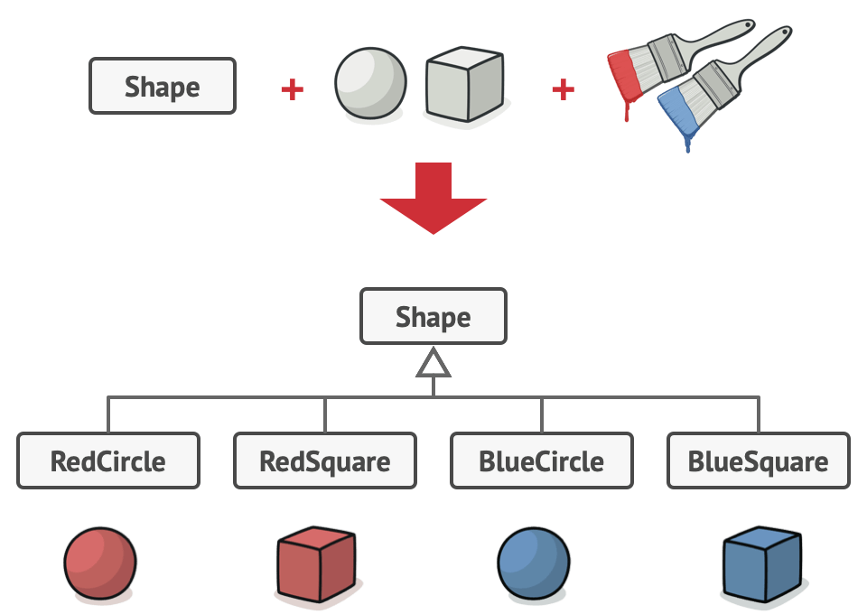
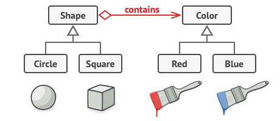

Vererbung¶
Die Vererbung ist ein fundamentales Konzept in der objektorientierten Programmierung (OOP), das die Wiederverwendbarkeit von Code ermöglicht. In Python wird Vererbung durch die Schaffung von Klassen als Unterklasse einer anderen Klasse realisiert.
Beispiel 1¶
Video
Wir erzeugen als erstes Beispiel dafür eine Klasse Rectangle:
1 2 3 4 5 6 7 8 9 10 | |
Nun gibt es aber auch spezielle Rechtecke, wie z.B. Quadrate. Wenn wir diese definieren,
dann wollen wir gerne die Implementierung von Rectangle nutzen.
Wir erreichen dies, indem wir eine Klasse Square definieren, die von Rectangle erbt.
Dies zeigen wir an, indem wir beim Klassenkopf nach dem Klassennamen in runden Klammern notieren,
was die Oberklasse sein soll. Die abgeleitete Klasse Square hat zugriff auf alle Attribute und
Funktionen, die in Rectangle definiert sind:
1 2 3 4 5 6 7 8 9 10 11 12 13 14 15 16 17 | |
Wir sehen hier, dass die Square-instanz s auf die Funktion get_volume aus Rectangle zugreifen kann.
classDiagram
Rectangle <| -- Square
class Rectangle{
sizeA
sizeB
__init__(self, sizeA, sizeB)
get_volume()
}
class Square{
__init__(self, size)
}Unser Code erlaubt noch eine Verbesserung. Wir legen im __init__ von Square die Felder sizeA
und sizeB selbst fest, statt die __init__ Methode von Rectangle auszunutzen. Hier gibt es zwei Varianten,
wie wir vorgehen könnten. Wir könnten Rectange.__init__(self, size, size) aufrufen, oder wir nutzen
die super() Methode wie folgt:
1 2 3 4 5 6 7 8 9 10 11 12 13 14 15 16 | |
Typen erkennen
Erstelle eine Instanz s von Square. Beantworte dann folgende Fragen:
- Was ist
type(s)? - Was ist
type(s).__mro__bzw.Square.__mro__? - Was ist das Ergebnis von
isinstance(s, Square)? - Was ist das Ergebnis von
isinstance(s, Rectangle)?
Lösung
Hier sind die Antworten:
type(s)ist<class '__main__.Square'>.type(s).__mro__bzw.Square.__mro__ist(<class '__main__.Square'>, <class '__main__.Rectangle'>, <class 'object'>).isinstance(s, Square)ergibtTrue.isinstance(s, Rectangle)ergibt ebenfallsTrue.
Es werden bei __mro__ also alle Obertypen aufgelistet, von der spezifischsten zur allgemeinsten Klasse.
Beispiel 2¶
Video
Im folgenden Beispiel sehen wir, wie super() sowohl dafür verwendet wird,
wie die __init__ Methode aufzurufen, als auch die Methdoe starten, die in
der Klasse Elektroauto überschrieben wird.
1 2 3 4 5 6 7 8 9 10 11 12 13 14 15 16 17 18 19 20 21 22 23 24 25 26 27 | |
Verschiedene Tiere
Erstellen Sie eine Python-Anwendung, die folgende Klassen für verschiedene Arten von Tieren implementiert:
-
Die Basisklasse
Tiermit der Eigenschaftnameund der Methodebewegen(). Die Methodebewegen()soll den Namen des Tiers gefolgt von "bewegt sich" ausgeben. -
Die abgeleitete Klasse
Hund, die vonTiererbt und zusätzlich die Methodebellen()hat. Die Methodebellen()soll den Namen des Hundes gefolgt von "bellt" ausgeben. -
Die abgeleitete Klasse
Katze, die vonTiererbt und zusätzlich die Methodemiauen()hat. Die Methodemiauen()soll den Namen der Katze gefolgt von "miaut" ausgeben.
Der folgende Code soll durchführbar sein:
1 2 3 4 5 6 7 8 9 10 | |
Implementieren Sie die Klassen Tier, Hund und Katze entsprechend der Anforderungen.
Lösung
Hier ist eine mögliche Lösung:
1 2 3 4 5 6 7 8 9 10 11 12 13 14 15 16 | |
Diese Implementierung erfüllt alle Anforderungen der Aufgabe:
- Die Basisklasse Tier hat eine name Eigenschaft und eine bewegen() Methode.
- Die Hund Klasse erbt von Tier und fügt die bellen() Methode hinzu.
- Die Katze Klasse erbt von Tier und fügt die miauen() Methode hinzu.
- Alle Methoden geben die entsprechenden Nachrichten aus, wie in der Aufgabenstellung beschrieben.
Geometry
Erstelle die folgenden Klassen:
Formhat zwei Methodeninhaltundumfang, die beide einenNotImplementedErrorwerfen, wenn sie aufgerufen werden.Kreiserbt vonFormund hat ein KlassenatrributPI = 3.14159265358979323846und ein Attributradius.inhaltundumfangsind implementiert.Dreieckerbt vonFormund hat drei SeitensizeA,sizeBundsizeC. Weiterhin gibt es eine Methodehat_90_grad_winkel, die mit dem Satz des Pythagoras prüft, ob es einen 90°-Winkel im Dreieck gibt.inhaltundumfangsind implementiert.Viereckerbt vonFormund hat vier SeitensizeA,sizeB,sizeCundsizeD. Diese implementiert die Methodeumfang.Parallelogramerbt vonViereckist über zwei Seiten festgelegt. Diese implementiert die Methodeinhalt.- Entwickle selbst mindestens zwei Methoden, die prüfen, ob die Formen bestimmte Eigenschaften erfüllen und implementiere eigene Tests dazu (jeweils mindestens 4).
Das folgende Diagramm zeigt, dir die Struktur der Klassen:
classDiagram
Form <|-- Kreis
Form <|-- Dreieck
Form <|-- Viereck
Viereck <|-- Parallelogramm
class Form{
umfang(self)
inhalt(self)
}
class Dreieck{
__init__(self, size_a, size_b, size_c)
umfang(self)
inhalt(self)
hat_90_grad_winkel(self)
}
class Kreis{
PI = 3.14159265358979323846
__init__(self, radius)
umfang(self)
inhalt(self)
}
class Viereck{
__init__(self, size_a, size_b, size_c, size_d)
umfang(self)
}
class Parallelogramm{
__init__(self, size_a, size_b)
inhalt(self)
}Nutze dazu die folgenden Klassenköpfe:
1 2 3 4 5 6 7 8 9 10 11 12 13 14 15 16 17 18 19 20 21 22 | |
Implementiere alle Methoden so, sodass die folgenden Tests erfolgreich sind:
1 2 3 4 5 6 7 8 9 10 11 12 13 14 15 16 17 18 19 20 21 22 23 24 25 26 27 28 29 30 31 32 33 34 35 36 37 38 39 40 41 42 43 44 45 46 47 48 49 50 51 52 53 54 55 56 57 58 59 60 61 62 63 64 65 66 67 68 69 70 71 72 73 74 75 76 77 78 79 80 81 82 83 84 85 86 87 88 89 90 91 92 93 94 95 96 97 98 99 100 101 102 103 104 105 106 107 108 109 110 111 112 113 114 115 116 117 118 119 120 121 122 123 124 125 126 | |
Lösung
Hier ist eine mögliche Lösung:
1 2 3 4 5 6 7 8 9 10 11 12 13 14 15 16 17 18 19 20 21 22 23 24 25 26 27 28 29 30 31 32 33 34 35 36 37 38 39 40 41 42 43 44 45 46 47 48 49 50 51 52 53 54 55 56 57 58 59 60 61 | |
Diese Implementierung erfüllt alle Anforderungen der Aufgabe und sollte alle gegebenen Tests bestehen.
Composition over Inheritance
Betrachte das folgende Beispiel von gefärbten Formen:
1 2 3 4 5 6 7 8 9 10 11 12 13 14 | |

- Angenommen eine neue Farbe wird hinzugefügt, welche neuen Klassen würde das erzeugen?
- Angenommen es wird dann noch eine neue Form hinzugefügt, wie viele neue Klassen müssen dann erzeugt werden?
Betrachte nun diesen Code:
1 2 3 4 5 6 7 8 9 10 11 12 13 14 15 16 17 18 | |

Wir stellen nun dieselben Fragen erneut: 3. Angenommen eine neue Farbe wird hinzugefügt, welche neuen Klassen würde das erzeugen? 4. Angenommen es wird dann noch eine neue Form hinzugefügt, wie viele neue Klassen müssen dann erzeugt werden?
Erkläre den Unterschied zwischen den beiden Ansätzen und diskutiere die Vor- und Nachteile.
Lösung
-
Im ersten Fall müssen bei einer neuen Farbe zwei neue Klassen erstellt werden, z.B.
GreenCircleundGreenSquare. -
Um eine neue Form hinzuzufügen, müssen im ersten Fall drei neue Klassen hinzugefügt werden, z.B.
RedTriangle,BlueTriangleundGreenTriangle. -
Im zweiten Fall muss bei einer neuen Farbe nur eine neue Klasse erstellt werden, z.B. einfach
Green. -
Um eine neue Form hinzuzufügen, muss im zweiten Fall nur eine neue Klasse hinzugefügt werden, z.B.
Triangle.
Erklärung: - Im ersten Ansatz (Vererbung) wächst die Anzahl der Klassen exponentiell mit jeder neuen Farbe oder Form. - Im zweiten Ansatz (Composition) wächst die Anzahl der Klassen nur linear.
Vorteile des zweiten Ansatzes (Composition): - Flexibler und einfacher zu erweitern - Weniger redundanter Code - Bessere Trennung von Zuständigkeiten (Farbe und Form sind getrennt)
Nachteile des ersten Ansatzes (Vererbung): - Schnell wachsende Komplexität - Viele Klassen, die möglicherweise nie verwendet werden - Schwieriger zu warten und zu erweitern
Schlussfolgerung: Man sollte immer überlegen, ob Vererbung tatsächlich notwendig ist. In vielen Fällen ist Composition (wie im zweiten Beispiel) die bessere Wahl, da es zu flexiblerem und wartbarerem Code führt.
Composition über Vererbung bei Sportlern
Untersuche den folgenden Code. Teile die Klassen analog zum letzten Beispiel auf:
1 2 3 4 5 6 7 8 9 10 11 12 13 14 | |
- Wie viele neue Klassen müssten erstellt werden, wenn eine neue Sportart hinzugefügt wird?
- Wie viele neue Klassen müssten erstellt werden, wenn eine neue Nationalität hinzugefügt wird?
- Strukturiere den Code um, indem du Composition statt Vererbung verwendest.
- Erkläre die Vorteile dieser neuen Struktur.
Lösung
-
Bei der aktuellen Struktur müssten zwei neue Klassen erstellt werden, eine für jede Nationalität.
-
Bei der aktuellen Struktur müssten drei neue Klassen erstellt werden, eine für jede Sportart.
-
Hier ist die umstrukturierte Version des Codes:
1 2 3 4 5 6 7 8 9 10 11 12 13 14 15 16 17 18 19 20 21 22 | |
- Vorteile der neuen Struktur:
- Flexibilität: Neue Sportarten oder Nationalitäten können einfach hinzugefügt werden, ohne viele neue Klassen zu erstellen.
- Wartbarkeit: Änderungen an einer Sportart oder Nationalität müssen nur an einer Stelle vorgenommen werden.
- Skalierbarkeit: Die Anzahl der Klassen wächst linear statt exponentiell mit neuen Sportarten oder Nationalitäten.
- Bessere Trennung von Zuständigkeiten: Sportart und Nationalität sind getrennte Konzepte und können unabhängig voneinander entwickelt werden.